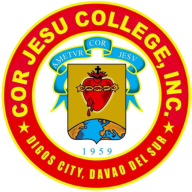

Resume of Hanny Gravino
Career
Oct 2023 to Present
Housing Estimator and Construction Estimating Software Support
Senterprisys Limited, Queensland, Australia
Aug 2021 to Feb 2023
Project Engineer, Project Management Coordinator and Structural Designer
ADRA Constructions Corporation, Digos City, Philippines
Mar 2020 to Jun 2021
Junior Structural Engineer and Project Coordinator
WMCabardo Engineering & Consulting, Digos City, Philippines
Education
2024
Diploma of Project Management (BSB50820)
Canterbury Technical Institute, Brisbane
2014 to 2019

BS Civil Engineering
Cor Jesu College · Digos City, Davao del Sur
2010 to 2014
Kapatagan National High School
High school · Kapatagan, Lanao del Norte
2003 to 2010
Rizal Central Elementary School
Elementary · Kapatagan, Digos City
Training and CPD
Sep 2023
Prepare to Work Safely in the Construction Industry (White Card, CPCWHS1001)
Blue Dog Training, Australia
Nov 2022
PICE 48th National Convention and Technical Conference
Philippine Institute of Civil Engineers, Bacolod City
Nov 2022
Application of Global Solutions to Local Projects
MIDAS webinar
Jul 2022
Disaster Mitigation, Preparedness and Response Training
Association of Structural Engineers of the Philippines with PICE Davao City Chapter, Davao City
Apr 2022
Paradigm Shift 2022: Seismic Evaluation and Isolation in Midas Gen
MIDAS webinar
Mar 2022
Bridge Expert Web-Convention 2022: Pioneers of Modern Bridge Design
MIDAS webinar
Placeholder
Add headshot photo.
Expertise
- Structural analysisETABS, VisualFoundation, AutoCAD, SketchUp
- Seismic and retrofitSeismic modeling, Vierendeel truss design, concrete jacketing, retrofit planning
- Project managementGantt and S-curve scheduling, procurement planning, cost estimating, BOQ and BOM preparation
- Codes and complianceNSCP, NBCP, local seismic ordinances
- Software and platformsJira, Azure DevOps, MS Project, Canva